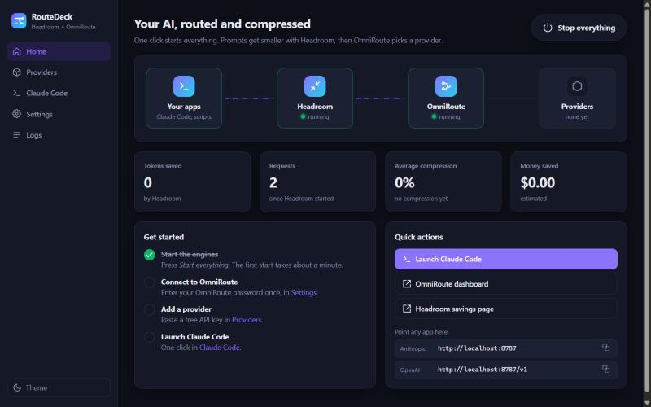

Why RouteDeck
One click
Start or stop Headroom and OmniRoute together. No terminal, no environment variables.
Free models
Connect free providers such as Gemini, Mistral, OpenRouter, Groq and GitHub Models, plus keyless options.
Fewer tokens
Headroom compresses logs, JSON and tool output before they reach the model, with live savings shown.
Analytics
Requests, tokens, success rate, latency and errors by provider and model, with graphs and tables.
Ponytail built in
Install the Ponytail Claude Code plugin with one click, to keep code small and focused.
Private and local
The dashboard answers only this computer. Your keys stay in your own OmniRoute.
Install in three steps
npm install -g omniroute pip install "headroom-ai[proxy]" git clone https://github.com/Harshit1404005/routedeck cd routedeck && node server.mjs
Windows: double-click RouteDeck.cmd. macOS and Linux: run ./routedeck.sh. Then press Start everything, add a free key, and launch Claude Code.
Frequently asked questions
How do I use Claude Code for free?
Install RouteDeck, add a free API key (Gemini, Mistral or Groq work well) in the Providers page, then press Launch Claude Code. Requests go through Headroom and OmniRoute to the free model.
What is RouteDeck?
A free, open-source control panel that starts and manages Headroom and OmniRoute together, so free AI models work with Claude Code in one click.
Does it work with the Claude desktop app?
No. The Claude desktop app always connects to Anthropic directly. RouteDeck works with Claude Code in a terminal and with any app that accepts a custom base URL.
Is RouteDeck free?
Yes. It is MIT licensed. Free models are limited by each provider's free tier.
Which AI providers does it support?
Google Gemini, Mistral, OpenRouter, Groq, GitHub Models, NVIDIA NIM, Z.AI, DeepSeek, Cerebras, plus keyless options such as Kilo Code, OpenCode Zen and Pollinations.